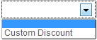
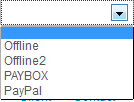

The filters and areas are explained from to bottom and from left to right.
"Download invoices as CSV" allow you to download the filtered invoices in a CSV format, you can check how to modify the render in Configuration and read more about it into the I'd like to get copy of my invoices on my coputer, how can I do that ? article.
The first filter with the "Search" and "reset" buttons is a free filter, you can type any data that is displayed in each line of invoices. You can type and ID, number invoice, number order, name or part name of client or vendor.
The filter just below is the calendar now, it allows to choose to display invoices and orders only between determined dates.
The filters surrounded by orange are respectively the one with list of coupons and list of payment processors currently published. You can see them just below :
 The filters just on the right allows to choose state ("paid", "cancelled", "pending", "new") or in the list of created clients and vendors.
You can see order and invoice numbers. If the order had once the "PAID" status, then it has an invoice number. You choose the way it's displayed on the Configuration.
When no coupon is affected to an invoice, ______ will be displayed.
The column actions allow you to see your invoice in a popup, check how it will be displayed as PDF attachment in emails if you enabled it and finally to sent email to the client and admin if its enabled depending on the current state of the order or invoice.